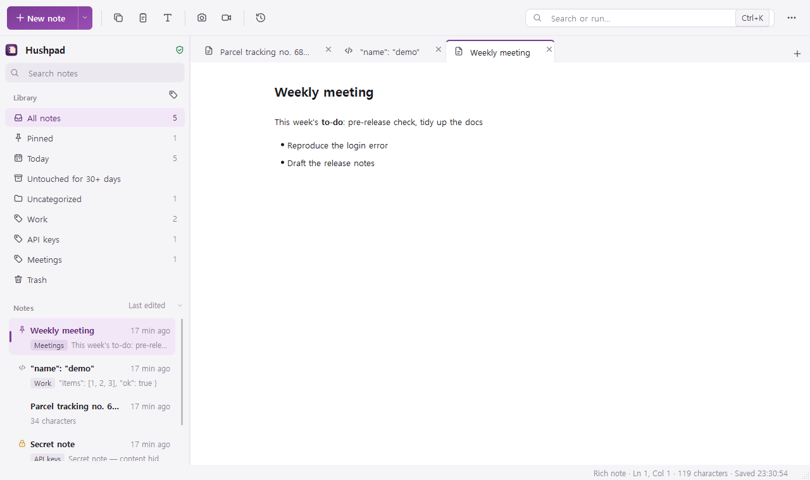
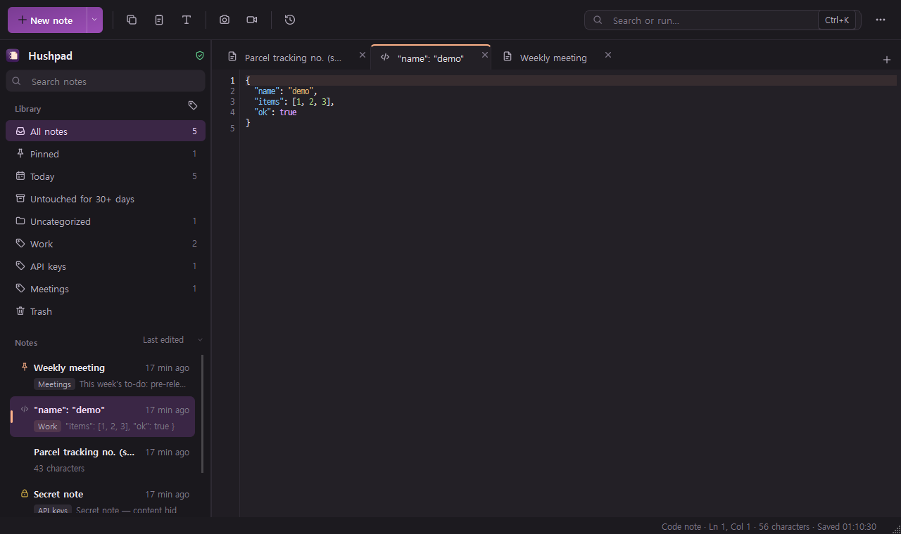

Write quietly. Seen by no one.
What you type is saved as you go, no save button needed. Every note is encrypted and kept in one folder, and the window never shows up in screenshots or screen shares. Passwords, API keys, HTML, JSON and screenshots, all in one place.


If this is how you use Notepad
Tabs that stick around without saving are handy, until they start piling up.
Lightweight, with just what you need
Start typing right away, just like Windows Notepad, while Hushpad quietly handles what Notepad never could.
No save button
Saved the moment you type. No need to name anything: notes are sorted by the date and time they were created, all in one folder.
Every note encrypted
Open the files and there's nothing to read. Other apps, search indexers and cloud services can't see what's inside.
Invisible to capture
Screenshots, screen recordings and screen sharing in video calls don't pick up the Hushpad window. Only you can see it.
Rich text or plain text
Paste formatted text from the web as is, then copy it out as plain text with Ctrl+Shift+C. Rich notes always keep a plain-text version alongside.
HTML & JSON in a hurry
Code notes come with line numbers, syntax colors and auto-indent, plus one-step JSON formatting. On a KEY=value line, copy just the value.
Screenshots & short recordings
From anywhere, press Ctrl+Alt+S to capture an area or Ctrl+Alt+R to record the screen. Results land straight in a note, and videos are encrypted too.
Folders, merge, trash
Drag notes into folders, merge several into one, and restore deleted notes from the trash. You can even round up notes you haven't opened in a while and tidy them away.
Across your own PCs
Keep your vault folder in Dropbox or OneDrive and open it on another PC with the same password. One note is one file, so conflicts are rare.
Everything from Ctrl+K
Search note titles, note contents and every command from one box, then press Enter to run it. Ctrl+Alt+M saves your clipboard straight to a new note.
On your screen. Not in the capture.
Keep a note open while you share your screen, or take a screenshot: wherever the Hushpad window sits, the capture shows what's behind it. So go ahead and capture without moving the window out of the way.
- Screenshot and recording tools, video-call sharingOn Windows it uses the capture exclusion built into the system (Windows 10 version 2004 or later). On macOS it turns off sharing for the window.
- Recording controls stay out of the shotThe recording frame and the ⏸ ⏹ bar appear only on your screen.
- Turn it off when you need toWhen you do want to show a note on a screen share, one click in the menu turns it off.
How your notes stay protected
Hushpad has no server. Your notes live only in the folder you choose, and every file in it is encrypted.
- AES-256-GCM encryptionNotes, previous versions, videos, even folder names: everything is stored encrypted. Only while a recording is in progress does a temporary file exist, and it is deleted when the recording ends.
- A key derived from your password (scrypt)Without the password, the files can't be decrypted. If you forget it, not even the developer can recover them.
- Enter it once on your own PCHushpad remembers the key through your Windows account (DPAPI) or your macOS login keychain. On another account or another computer, you'll need the password again.
- A quiet clipboard, tooCopied text is flagged to stay out of Windows clipboard history and cloud clipboard sync.
- No account, no tracking, no internetNeither the app nor this website uses analytics or ad scripts.
├─ vault.json — key wrapped by your password
├─ notes\
│ ├─ 20261115-143205-a1b2.own
│ └─ 20261115-151740-9c0e.own
├─ history\ — previous versions
└─ media\ — recorded videos
$ type notes\20261115-143205-a1b2.own
OWN1 ▒▓░▒█▓░▒▓▒░█▓▒░▓█▒░▒▓█░▒▓░█▒▓
# this is all anyone sees
Shortcuts that become second nature
Some shortcuts work even while the window is closed to the tray (the menu bar on a Mac). On a Mac, press ⌃⌥ (Control+Option) instead of Ctrl+Alt, and ⌘ instead of Ctrl inside the app.
Frequently asked questions
Where do I get it?
From this site's download page. Files are published on GitHub Releases in two builds: one for Windows 10 and 11 (64-bit) and one for Macs with Apple silicon (M1 or later). Intel-based Macs are not supported.
Is it free? Is it open source?
Yes to both. Hushpad is free, and its source code is published on GitHub under GPL-3.0-or-later. Anyone can read, change and redistribute it. If you distribute a modified version, you need to publish its source under the same license and give it a different name and icon.
Can I bring over the tabs I have open in Windows Notepad?
Yes. On Windows, Menu › File › Import Windows Notepad tabs copies them over, unsaved tabs included, and leaves Windows Notepad untouched.
What if I forget my password?
There's no way to recover it. Hushpad is built so that no one, not even its developer, can open your notes without the password. Write it down somewhere safe when you first set it.
Are my notes still there after a restart?
Yes. Notes are encrypted and written to disk as you type, so they're there when your computer comes back on. After the first run, Hushpad starts in the tray when Windows starts (on a Mac, in the menu bar when you log in). If you'd rather it didn't, turn this off from the tray icon's menu or the Security menu.
How do I use it on more than one PC?
Keep your vault folder inside a synced folder such as Dropbox or OneDrive, then choose the same folder on your other PC and enter the same password. Changes made on another PC show up within seconds, and if both sides edit at the same time, one version is kept separately as a “conflict copy.”
Can I add images or videos?
You can paste or drag images into rich-text notes, and screenshots and short screen recordings (up to 3 minutes) go straight in. Videos play inside the app and are stored encrypted.
Does it send anything over the internet?
No. Hushpad has no account and no server, and it doesn't connect to the internet while it runs.
Is it hidden from capture on a Mac, too?
On macOS, Hushpad turns off sharing for its window. On macOS 15 and later, though, some capture and screen-sharing apps that use ScreenCaptureKit ignore that setting and can still capture the window. On a Mac, check for yourself before you share your screen.
Can I change the app's language?
The app comes in Korean, English, Japanese and Simplified Chinese, and starts in your system language. You can switch anytime under Menu (⋯) › View › Language.